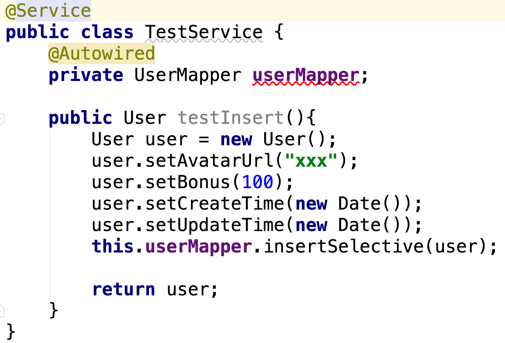

<!DOCTYPE HTML>
<html lang="zh-CN">
<head><meta name="generator" content="Hexo 3.8.0">
    <!--Setting-->
    <meta charset="UTF-8">
    <meta name="viewport" content="width=device-width, user-scalable=no, initial-scale=1.0, maximum-scale=1.0, minimum-scale=1.0">
    <meta http-equiv="X-UA-Compatible" content="IE=Edge,chrome=1">
    <meta http-equiv="Cache-Control" content="no-siteapp">
    <meta http-equiv="Cache-Control" content="no-transform">
    <meta http-equiv="pragma" content="no-cache">
    <meta http-equiv="Cache-Control" content="no-cache, must-revalidate">
    <meta http-equiv="expires" content="Mon Apr 06 2020 02:12:38 GMT+0800 (CST)">
    <meta name="renderer" content="webkit|ie-comp|ie-stand">
    <meta name="apple-mobile-web-app-capable" content="张万众的博客 - 关注Spring Cloud、Docker">
    <meta name="apple-mobile-web-app-status-bar-style" content="black">
    <meta name="format-detection" content="telephone=no,email=no,adress=no">
    <meta name="browsermode" content="application">
    <meta name="screen-orientation" content="portrait">
    <meta name="theme-version" content="1.2.3">
    <meta name="root" content="/">
    
    <!--SEO-->

    <meta name="keywords" content="工作,Mybatis">


    <meta name="description" content="相信使用Mybaits的小伙伴们一定会经常编写类似如下的代码：

可以看到 userMapper 下有个红色警告。虽然代码本身并没有问题，能正常运行，但有个警告总归有点恶心。本文分析原因，并列出解决该警告的几种方案。
原因众所周知，IDEA是非常智能的，它可以理解Spring的上下文。然而 U...">


<meta name="robots" content="all">
<meta name="google" content="all">
<meta name="googlebot" content="all">
<meta name="verify" content="all">
    <!--Title-->


<title>Intellij IDEA中Mybatis Mapper自动注入警告的6种解决方案 | 张万众的博客 - 关注Spring Cloud、Docker</title>


    <link rel="alternate" href="../../atom.html" title="张万众的博客 - 关注Spring Cloud、Docker" type="application/atom+xml">


    

    


<link rel="stylesheet" href="../../static/css/bootstrap.min-271a649e0635d6fa1b.css">
<link rel="stylesheet" href="../../static/css/font-awesome.min-ac2bebcf7fb5b26.css">
<link rel="stylesheet" href="../../static/css/style-6f3c140f6eee20e6591da00ec0.css">


    


    <script>
        var _hmt = _hmt || [];
        (function() {
            var hm = document.createElement("script");
            hm.src = "https://hm.baidu.com/hm.js?13766878cde148282622871dd245a973";
            var s = document.getElementsByTagName("script")[0];
            s.parentNode.insertBefore(hm, s);
        })();
    </script>


    

</head>

</html>
<!--[if lte IE 8]>
<style>
    html{ font-size: 1em }
</style>
<![endif]-->
<!--[if lte IE 9]>
<div style="ie">你使用的浏览器版本过低，为了你更好的阅读体验，请更新浏览器的版本或者使用其他现代浏览器，比如Chrome、Firefox、Safari等。</div>
<![endif]-->

<body>
    
    <nav class="main-navigation">
    <div class="container">
        <div class="row clearfix">
            <div class="col-md-12 column">
                <nav class="navbar navbar-default" style="background-color:#fff;border:0;margin-bottom:0" role="navigation">
                    <div class="navbar-header">
                        <button type="button" class="navbar-toggle" data-toggle="collapse" data-target="#navbar-collapse-1">
                            <span class="sr-only">切</span>
                            <span class="icon-bar"></span>
                            <span class="icon-bar"></span>
                            <span class="icon-bar"></span>
                        </button>
                        <a class="logo" href="../../index.html">
                            张万众的博客
                        </a>
                    </div>

                    <div class="collapse navbar-collapse" style="border:0;" id="navbar-collapse-1">
                        <ul class="nav navbar-nav">
                            
                                
                                    <li>
                                        <a href="../../about.html" target="_blank">
                                            <i class="fa fa-user"></i>
                                            关于我
                                        </a>
                                    </li>
                                
                            
                                
                                    <li>
                                        <a href="../../archives.html" target="_blank">
                                            <i class="fa fa-archive"></i>
                                            归档
                                        </a>
                                    </li>
                                
                            
                                
                                    <li class="dropdown">
                                        <a href="#" class="dropdown-toggle" data-toggle="dropdown" data-hover="dropdown">
                                            <i class="fa fa-fire"></i>
                                            系列课程
                                            <strong class="caret"></strong>
                                        </a>
                                        <ul class="dropdown-menu">
                                            
                                                <li>
                                                    <a href="../../docker/00-docker-lession-index.html" target="_blank">
                                                        <i class="fa "></i>
                                                        Docker系列教程
                                                    </a>
                                                </li>
                                            
                                                <li>
                                                    <a href="../../spring-cloud/spring-cloud-index.html" target="_blank">
                                                        <i class="fa "></i>
                                                        Spring Cloud系列教程
                                                    </a>
                                                </li>
                                            
                                                <li>
                                                    <a href="../../spring-boot/spring-boot-index.html" target="_blank">
                                                        <i class="fa "></i>
                                                        Spring Boot系列教程
                                                    </a>
                                                </li>
                                            
                                        </ul>
                                    </li>
                                
                            
                                
                                    <li class="dropdown">
                                        <a href="#" class="dropdown-toggle" data-toggle="dropdown" data-hover="dropdown">
                                            <i class="fa fa-book"></i>
                                            开源书
                                            <strong class="caret"></strong>
                                        </a>
                                        <ul class="dropdown-menu">
                                            
                                                <li>
                                                    <a href="../../books/rocketmq.html" target="_blank">
                                                        <i class="fa fa-rocket"></i>
                                                        RocketMQ开发者指南
                                                    </a>
                                                </li>
                                            
                                                <li>
                                                    <a href="../../books/skywalking.html" target="_blank">
                                                        <i class="fa fa-skyatlas"></i>
                                                        Skywalking 6.2.0中文文档
                                                    </a>
                                                </li>
                                            
                                        </ul>
                                    </li>
                                
                            
                                
                                    <li class="dropdown">
                                        <a href="#" class="dropdown-toggle" data-toggle="dropdown" data-hover="dropdown">
                                            <i class="fa fa-cog"></i>
                                            工具
                                            <strong class="caret"></strong>
                                        </a>
                                        <ul class="dropdown-menu">
                                            
                                                <li>
                                                    <a href="../../tools/markdown2.html" target="_blank">
                                                        <i class="fa "></i>
                                                        微信排版工具2.0
                                                    </a>
                                                </li>
                                            
                                        </ul>
                                    </li>
                                
                            
                        </ul>
                        
                            <form id="search-form" class="navbar-form navbar-right">
                                <div class="form-group input-group">
                                    <input type="text" id="local-search-input" class="form-control" placeholder="搜我...">
                                    <span class="input-group-btn">
                                        <a class="btn btn-default">
                                            <i class="fa fa-search"></i>
                                        </a>
                                    </span>
                                </div>
                                <div id="local-search-result" class="local-search-result-cls"></div>
                            </form>
                        
                    </div>
                </nav>
            </div>
        </div>
    </div>
</nav>

    <a href="javascript:;" target="_blank">
        
    </a>


    <section class="content-wrap">
        <div class="container">
            <div class="row">
                <main class="col-md-8 main-content m-post">
                    

<p id="process"></p>
<article class="post">
    <div class="post-head">
        <h1 id="Intellij IDEA中Mybatis Mapper自动注入警告的6种解决方案">
            
                Intellij IDEA中Mybatis Mapper自动注入警告的6种解决方案
            
        </h1>
        <div class="post-meta">
    
        <span class="categories-meta fa-wrap">
            <i class="fa fa-folder-open-o"></i>
            <a class="category-link" href="../../categories/其他/index.html">其他</a>
        </span>
    

    
        <span class="fa-wrap">
            <i class="fa fa-tags"></i>
            <span class="tags-meta">
                
                    <a class="tag-link" href="javascript:;">Mybatis</a> <a class="tag-link" href="../../tags/工作/index.html">工作</a>
                
            </span>
        </span>
    

    
        
        <span class="fa-wrap">
            <i class="fa fa-clock-o"></i>
            <span class="date-meta">2019/06/12</span>
        </span>
        
            <span class="fa-wrap">
                <i class="fa fa-eye"></i>
                <span id="busuanzi_value_page_pv"></span>
            </span>
        
    
</div>
        
        
    </div>
    
    <div class="post-body post-content" id="post-content">
        
    <div class="toc-article">
        <strong>
            目录
        </strong>
        <div class="toc-content">
            <ol class="toc"><li class="toc-item toc-level-2"><a class="toc-link" href="#原因"><span class="toc-text">原因</span></a></li><li class="toc-item toc-level-2"><a class="toc-link" href="#解决方案"><span class="toc-text">解决方案</span></a><ol class="toc-child"><li class="toc-item toc-level-3"><a class="toc-link" href="#方法1：为-Autowired-注解设置required-false"><span class="toc-text">方法1：为 @Autowired 注解设置required = false</span></a></li><li class="toc-item toc-level-3"><a class="toc-link" href="#方法2：用-Resource-替换-Autowired"><span class="toc-text">方法2：用 @Resource 替换 @Autowired</span></a></li><li class="toc-item toc-level-3"><a class="toc-link" href="#方法3：在Mapper接口上加上-Repository注解"><span class="toc-text">方法3：在Mapper接口上加上@Repository注解</span></a></li><li class="toc-item toc-level-3"><a class="toc-link" href="#方法4：用Lombok"><span class="toc-text">方法4：用Lombok</span></a></li><li class="toc-item toc-level-3"><a class="toc-link" href="#方法5：把IDEA的警告关闭掉"><span class="toc-text">方法5：把IDEA的警告关闭掉</span></a></li><li class="toc-item toc-level-3"><a class="toc-link" href="#方法6：安装mybatis-plugin"><span class="toc-text">方法6：安装mybatis plugin</span></a></li></ol></li><li class="toc-item toc-level-2"><a class="toc-link" href="#总结"><span class="toc-text">总结</span></a></li><li class="toc-item toc-level-2"><a class="toc-link" href="#参考文档"><span class="toc-text">参考文档</span></a></li></ol>
        </div>
    </div>


        <p>相信使用Mybaits的小伙伴们一定会经常编写类似如下的代码：</p>
<p></p>
<p>可以看到 <code>userMapper</code> 下有个红色警告。虽然代码本身并没有问题，能正常运行，但有个警告总归有点恶心。本文分析原因，并列出解决该警告的几种方案。</p>
<h2 id="原因"><a href="#原因" class="headerlink" title="原因"></a>原因</h2><p>众所周知，IDEA是非常智能的，它可以理解Spring的上下文。然而 <code>UserMapper</code> 这个接口是Mybatis的，IDEA理解不了。</p>
<p>而 <code>@Autowired</code> 注解，默认情况下要求依赖对象（也就是 <code>userMapper</code> ）必须存在。而IDEA认为这个对象的实例/代理是个null，所以就<strong>友好地给个提示</strong>。</p>
<h2 id="解决方案"><a href="#解决方案" class="headerlink" title="解决方案"></a>解决方案</h2><h3 id="方法1：为-Autowired-注解设置required-false"><a href="#方法1：为-Autowired-注解设置required-false" class="headerlink" title="方法1：为 @Autowired 注解设置required = false"></a>方法1：为 <code>@Autowired</code> 注解设置required = false</h3><p>使用 <code>@Autowired</code> 注解时，若希望允许null值，可设置required = false，像这样：</p>
<figure class="highlight java"><table><tr><td class="gutter"><pre><span class="line">1</span><br><span class="line">2</span><br></pre></td><td class="code"><pre><span class="line"><span class="meta">@Autowired</span>(required = <span class="keyword">false</span>)</span><br><span class="line"><span class="keyword">private</span> UserMapper userMapper;</span><br></pre></td></tr></table></figure>
<p>这样就不会有警告了。原因很好理解：IDEA认为userMapper是个null，给了警告；加上required = false后，使用 <code>@Autowired</code> 注解不再去校验userMapper是否存在了。也就不会有警告了。</p>
<p><strong>总结</strong>：这种方式有点蛋疼。一个庞大的既有项目，可能到处都在引用Mapper，总不能到处都补上 required = false 吧……而且对于新手/新员工，很难一眼看懂加required = false属性只是为了解决IDEA的警告。</p>
<h3 id="方法2：用-Resource-替换-Autowired"><a href="#方法2：用-Resource-替换-Autowired" class="headerlink" title="方法2：用 @Resource 替换 @Autowired"></a>方法2：用 <code>@Resource</code> 替换 <code>@Autowired</code></h3><p>像这样：</p>
<figure class="highlight java"><table><tr><td class="gutter"><pre><span class="line">1</span><br><span class="line">2</span><br></pre></td><td class="code"><pre><span class="line"><span class="meta">@Resource</span></span><br><span class="line"><span class="keyword">private</span> UserMapper userMapper;</span><br></pre></td></tr></table></figure>
<p>这样也不会再有讨厌的警告。如果你对原因感兴趣，不妨了解一下<a href="javascript:;" target="_blank" rel="noopener">《@Autowired 与@Resource的区别》</a></p>
<p><strong>总结</strong>：这种方式挺赞，但如果一个项目已经大量使用@Autowired，然后为了个警告到处改成@Resource，也有点蛋疼。</p>
<h3 id="方法3：在Mapper接口上加上-Repository注解"><a href="#方法3：在Mapper接口上加上-Repository注解" class="headerlink" title="方法3：在Mapper接口上加上@Repository注解"></a>方法3：在Mapper接口上加上@Repository注解</h3><p>像这样：</p>
<figure class="highlight java"><table><tr><td class="gutter"><pre><span class="line">1</span><br><span class="line">2</span><br><span class="line">3</span><br></pre></td><td class="code"><pre><span class="line"><span class="meta">@Repository</span></span><br><span class="line"><span class="keyword">public</span> <span class="class"><span class="keyword">interface</span> <span class="title">UserMapper</span> <span class="keyword">extends</span> <span class="title">Mapper</span>&lt;<span class="title">User</span>&gt; </span>&#123;</span><br><span class="line">&#125;</span><br></pre></td></tr></table></figure>
<p>这样也能让你的</p>
<figure class="highlight java"><table><tr><td class="gutter"><pre><span class="line">1</span><br><span class="line">2</span><br></pre></td><td class="code"><pre><span class="line"><span class="meta">@Autowired</span></span><br><span class="line"><span class="keyword">private</span> UserMapper userMapper;</span><br></pre></td></tr></table></figure>
<p>不再报错。</p>
<p>当然，如果你用@Component替换@Repository也是可以的。原理大致：IDEA不是认为 <code>userMapper</code> 是个null嘛…加个@Repository注解骗一下IDEA就OK了……</p>
<p><strong>总结</strong>：这种方式比较赞，改动小，也简单，我比较喜欢。</p>
<h3 id="方法4：用Lombok"><a href="#方法4：用Lombok" class="headerlink" title="方法4：用Lombok"></a>方法4：用Lombok</h3><p>像这样：</p>
<figure class="highlight java"><table><tr><td class="gutter"><pre><span class="line">1</span><br><span class="line">2</span><br><span class="line">3</span><br><span class="line">4</span><br><span class="line">5</span><br><span class="line">6</span><br></pre></td><td class="code"><pre><span class="line"><span class="meta">@Service</span></span><br><span class="line"><span class="meta">@RequiredArgsConstructor</span>(onConstructor = @__(<span class="meta">@Autowired</span>))</span><br><span class="line"><span class="keyword">public</span> <span class="class"><span class="keyword">class</span> <span class="title">TestService</span> </span>&#123;</span><br><span class="line">    <span class="keyword">private</span> <span class="keyword">final</span> UserMapper userMapper;</span><br><span class="line">    ...</span><br><span class="line">&#125;</span><br></pre></td></tr></table></figure>
<p>Lombok生成的代码是这样的：</p>
<figure class="highlight java"><table><tr><td class="gutter"><pre><span class="line">1</span><br><span class="line">2</span><br><span class="line">3</span><br><span class="line">4</span><br><span class="line">5</span><br><span class="line">6</span><br><span class="line">7</span><br><span class="line">8</span><br><span class="line">9</span><br></pre></td><td class="code"><pre><span class="line"><span class="meta">@Service</span></span><br><span class="line"><span class="keyword">public</span> <span class="class"><span class="keyword">class</span> <span class="title">TestService</span> </span>&#123;</span><br><span class="line">    <span class="keyword">private</span> <span class="keyword">final</span> UserMapper userMapper;</span><br><span class="line">    <span class="meta">@Autowired</span></span><br><span class="line">    <span class="function"><span class="keyword">public</span> <span class="title">TestService</span><span class="params">(<span class="keyword">final</span> UserMapper userMapper)</span> </span>&#123;</span><br><span class="line">        <span class="keyword">this</span>.userMapper = userMapper;</span><br><span class="line">    &#125;</span><br><span class="line">    ...</span><br><span class="line">&#125;</span><br></pre></td></tr></table></figure>
<p><strong>但如果自己手写成Lombok生成的代码，IDEA依然会给你报警告</strong> 。我猜，应该是IDEA的Lombok插件把IDEA搞懵逼了…所以不提示了…</p>
<p><strong>总结</strong> ：<strong>这是我目前最喜欢的方式</strong>。原因有2：</p>
<ul>
<li>Spring官方并不建议直接在类的field上使用@Autowired注解，原因详见：<a href="javascript:;" target="_blank" rel="noopener">《Why field injection is evil》</a> ，用本方法可将field注入编程构造方法注入，Spring是比较推荐的。</li>
<li>体现了Lombok的优势，简化了你的代码。而且你也不用在每个field上都加上@Autowired注解了。</li>
</ul>
<p><strong>不过这种方式也有缺点</strong>：那就是如果你类之间的依赖关系比较复杂，特别是存在循环依赖(A引用B，B引用A，或者间接的循环引用)时，应用将会启动不起来……<strong>这其实是构造方法注入方式的缺点</strong>。</p>
<h3 id="方法5：把IDEA的警告关闭掉"><a href="#方法5：把IDEA的警告关闭掉" class="headerlink" title="方法5：把IDEA的警告关闭掉"></a>方法5：把IDEA的警告关闭掉</h3><p>个人没试过，也没有动力去试。没有提示的IDEA是没有灵魂的，我从来不去修改IDEA的任何警告设置。</p>
<h3 id="方法6：安装mybatis-plugin"><a href="#方法6：安装mybatis-plugin" class="headerlink" title="方法6：安装mybatis plugin"></a>方法6：安装mybatis plugin</h3><p>安装mybatis plugin即可解决该问题。</p>
<h2 id="总结"><a href="#总结" class="headerlink" title="总结"></a>总结</h2><p>以上是解决问题的6种方法。问题本身其实比较简单，<strong>但其实隐藏的知识点其实挺多的</strong>，例如：</p>
<ul>
<li>@Autowired和@Resource有什么区别</li>
<li>为什么Spring不建议使用field方式注入</li>
<li>@Repository、@Componnt、@Controller、@Service有什么区别</li>
</ul>
<p>总之，硬货有时候就隐藏在很low的问题之下，哈哈哈。</p>
<h2 id="参考文档"><a href="#参考文档" class="headerlink" title="参考文档"></a>参考文档</h2><ul>
<li><a href="javascript:;" target="_blank" rel="noopener">剔除Intellij中Mybatis的Mapper自动注入警告</a></li>
<li><a href="javascript:;" target="_blank" rel="noopener">idea mybatis 注入 mapper 提示错误</a></li>
</ul>

        <h2>相关文章</h2><ul><li><a href="../mybatis-optional-support/index.html">我最喜欢的Mybatis 3.5新特性——Optional支持</a></li><li><a href="../../work/git-sum/index.html">盘点Git的那些冷门玩法</a></li><li><a href="../doc-generate/index.html">分享：如何生成漂亮的静态文档说明页</a></li><li><a href="../../work-sum-log4j-to-logback/index.html">将应用的log4j换成logback</a></li><li><a href="../../work/app-can-not-startup-without-any-error/index.html">应用无法启动，并且不报错的总结</a></li></ul>
    </div>
    
    <div class="post-footer">
        <div class="col-sm-10">
            <div>
                <b>本文链接</b>：<a href="" target="_blank">Intellij IDEA中Mybatis Mapper自动注入警告的6种解决方案</a>
            </div>
            <div>
                
                    转载声明：本博客由张万众创作，采用 <a href="javascript:;" target="_blank"> CC BY 3.0 CN </a> 许可协议。可自由转载、引用，但需署名作者且注明文章出处。如转载至微信公众号，请在文末添加作者公众号二维码。
                
            </div>
            <div>
                
            </div>
        </div>
        <div class="col-sm-2">
            
        </div>
    </div>
</article>

<div class="article-nav prev-next-wrap clearfix">
    
        <a target="_blank" href="../../spring-cloud-alibaba/nacos-ha/index.html" class="pre-post btn btn-default" title="搭建生产可用的Nacos集群">
            <i class="fa fa-angle-left fa-fw"></i><span class="hidden-lg">上一篇</span>
            <span class="hidden-xs">搭建生产可用的Nacos集群</span>
        </a>
    
    
        <a target="_blank" href="../../spring-cloud-alibaba/05-sentinel/index.html" class="next-post btn btn-default" title="Spring Cloud Alibaba系列教程-05-Sentinel入门与整合">
            <span class="hidden-lg">下一篇</span>
            <span class="hidden-xs">Spring Cloud Alibaba系列教程-05-Sentinel入门与整合</span><i class="fa fa-angle-right fa-fw"></i>
        </a>
    
</div>


    <div id="comments">
        
   <p>评论系统未开启，无法评论！</p>

    </div>


                </main>
                
    <aside class="col-md-4 sidebar">
        
        <div class="widget about-me">
    <div class="row">
        <div class="col-md-5">
            
        </div>
        <div class="col-md-7">
            <a class="series-a" href="javascript:void(0)">公众号</a>
            <ul>
                <li>• 技术干货推送</li>
                <li>• 免费资料领取</li>
                <li><b>• 扫码领取更多惊喜</b></li>
            </ul>
        </div>
    </div>
    
        <div class="row">
            <div class="col-md-5">
                
            </div>
            <div class="col-md-7">
                <a class="series-a" href="javascript:void(0)">小程序</a>
                <ul>
                    <li>• 原创笔记</li>
                    <li>• 独家心法</li>
                    <li><b>• 扫码领取</b></li>
                </ul>
            </div>
        </div>
    
</div>


        
        
    <div class="ad">
        <div class="row">
            <div class="col-md-12">
                <a href="javascript:;" rel="nofollow" target="_blank">
                    
                </a>
            </div>
        </div>
    </div>


        
        <div class="widget">
    <div class="row">
        <div class="col-md-3">
            
        </div>
        <div class="col-md-9">
            <a class="series-a" target="_blank" href="../../spring-cloud/spring-cloud-index.html">Spring Cloud系列教程</a>
            <p>全面、通俗易懂的Spring Cloud教程</p>
        </div>
    </div>
    <div class="row">
        <div class="col-md-3">
            
        </div>
        <div class="col-md-9">
            <a class="series-a" target="_blank" href="javascript:;">Spring Cloud Alibaba视频教程</a>
            <p>全网唯一，你值得拥有</p>
        </div>
    </div>
    <div class="row">
        <div class="col-md-3">
            
        </div>
        <div class="col-md-9">
            <a class="series-a" target="_blank" href="../../docker/00-docker-lession-index.html">Docker系列教程</a>
            <p>Docker系列</p>
        </div>
    </div>
    <div class="row">
        <div class="col-md-3">
            
        </div>
        <div class="col-md-9">
            <a class="series-a" target="_blank" href="../../spring-boot/spring-boot-index.html">Spring Boot系列教程</a>
            <p>Boot是基石...</p>
        </div>
    </div>
</div>


        
        
    <div class="widget">
        <h3 class="title">分类</h3>
        <ul class="category-list"><li class="category-list-item"><a class="category-list-link" href="javascript:;"><i class="fa" aria-hidden="true">Docker</i></a><span class="category-list-count">31</span></li><li class="category-list-item"><a class="category-list-link" href="javascript:;"><i class="fa" aria-hidden="true">Kubernetes</i></a><span class="category-list-count">2</span></li><li class="category-list-item"><a class="category-list-link" href="javascript:;"><i class="fa" aria-hidden="true">Spring Boot</i></a><span class="category-list-count">6</span></li><li class="category-list-item"><a class="category-list-link" href="javascript:;"><i class="fa" aria-hidden="true">Spring Cloud</i></a><span class="category-list-count">94</span></li><li class="category-list-item"><a class="category-list-link" href="javascript:;"><i class="fa" aria-hidden="true">Spring Cloud Alibaba</i></a><span class="category-list-count">16</span></li><li class="category-list-item"><a class="category-list-link" href="javascript:;"><i class="fa" aria-hidden="true">Spring Cloud Stream</i></a><span class="category-list-count">1</span></li><li class="category-list-item"><a class="category-list-link current" href="../../categories/其他/index.html"><i class="fa" aria-hidden="true">其他</i></a><span class="category-list-count">13</span></li><li class="category-list-item"><a class="category-list-link" href="../../categories/安装教程/index.html"><i class="fa" aria-hidden="true">安装教程</i></a><span class="category-list-count">7</span></li><li class="category-list-item"><a class="category-list-link" href="../../categories/工作/index.html"><i class="fa" aria-hidden="true">工作</i></a><span class="category-list-count">20</span></li></ul>
    </div>


        
        
        
        

        
    </aside>

            </div>
        </div>
    </section>
    <footer class="main-footer">
    <div class="container">
        <div class="row">
        </div>
    </div>
</footer>

<a id="back-to-top" class="icon-btn hide">
	<i class="fa fa-chevron-up"></i>
</a>


    <div class="copyright">
    <div class="container">
        <div class="row">
            <div class="col-sm-12">
                <div class="busuanzi">
    
        访问量:
        <strong id="busuanzi_value_site_pv">
            <i class="fa fa-spinner fa-spin"></i>
        </strong>
        &nbsp; | &nbsp;
        访客数:
        <strong id="busuanzi_value_site_uv">
            <i class="fa fa-spinner fa-spin"></i>
        </strong>
        &nbsp; <strong>Since 2018-12-26</strong>
    
</div>

            </div>
            <div class="col-sm-12">
                <span>Copyright &copy; 2017
                </span> |
                <span>
                    Powered by <a href="javascript:;" class="copyright-links" target="_blank" rel="nofollow">Hexo</a>
                </span> |
                <span>
                    Theme by <a href="javascript:;" class="copyright-links" target="_blank" rel="nofollow">ITMuch</a>
                </span>
            </div>
        </div>
    </div>
</div>

<script src="../../static/js/jquery.min.js"></script>
<script src="../../static/js/bootstrap.min.js"></script>
<script src="../../static/js/bootstrap-hover-dropdown.min.js"></script>

    <script src="../../static/js/search-3f4fbd0557c869ca0516ebb5f.js"></script>


    <script async="" src="../../static/js/busuanzi.pure.mini.js"></script>


<script src="../../static/js/app-da10bb3b2ae5c8348d2bd2cc3faf.js"></script>


</body>
